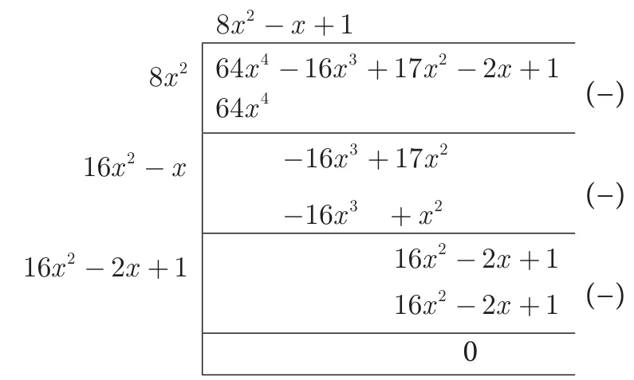
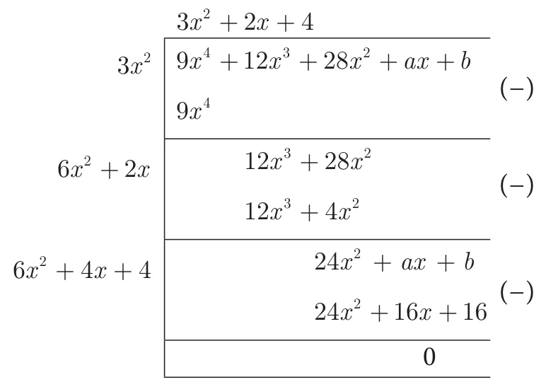

The long division method in finding the square root of a polynomial is useful when the degree of the polynomial is higher.
Note
Before proceeding to find the square root of a polynomial, one has to ensure that the degrees of the variables are in descending or ascending order.
Example 3.21
Find the square root of \(64x^4 - 16x^3 + 17x^2 - 2x + 1\)
Solution

Therefore, \(\sqrt{64x^4 - 16x^3 + 17x^2 - 2x + 1} = |8x^2 - x + 1|\)
Example 3.22
If \(9x^4 + 12x^3 + 28x^2 + ax + b\) is a perfect square, find the values of \(a\) and \(b\).
Solution

Because the given polynomial is a perfect square \(a - 16 = 0\), \(b - 16 = 0\)
Therefore \(a = 16,\ b = 16\).